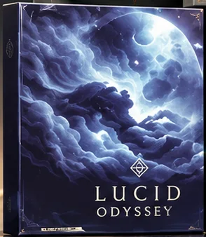
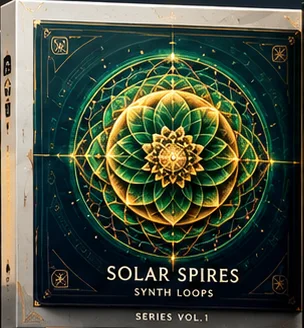
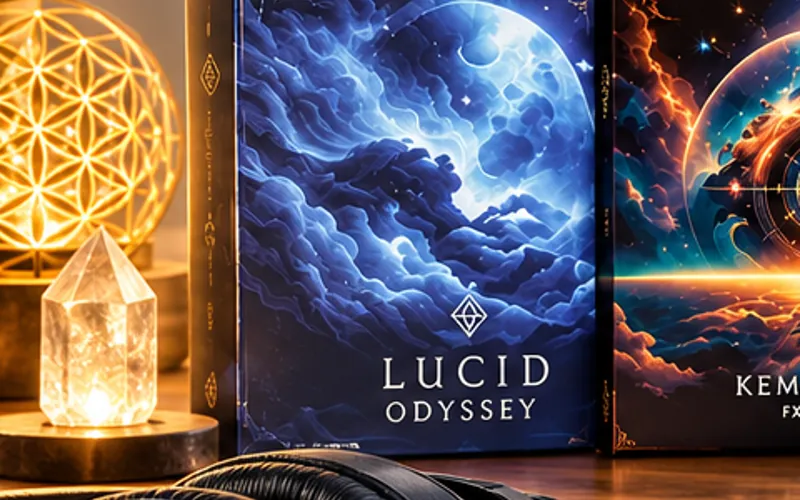
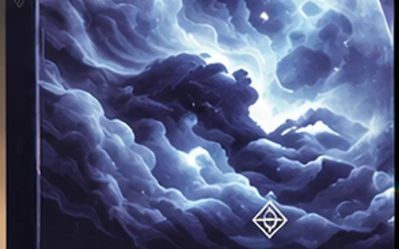
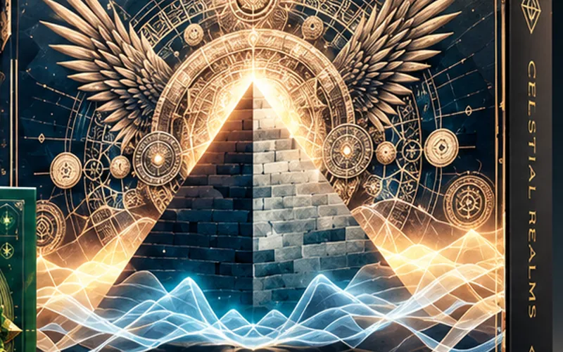
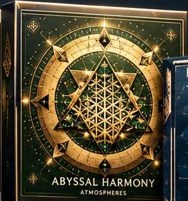
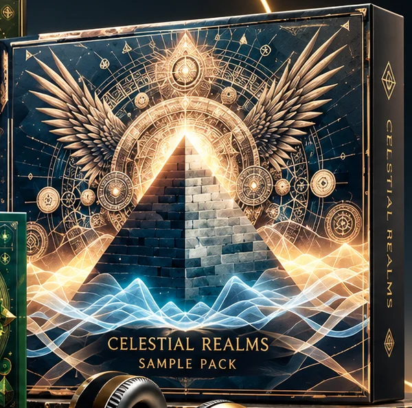
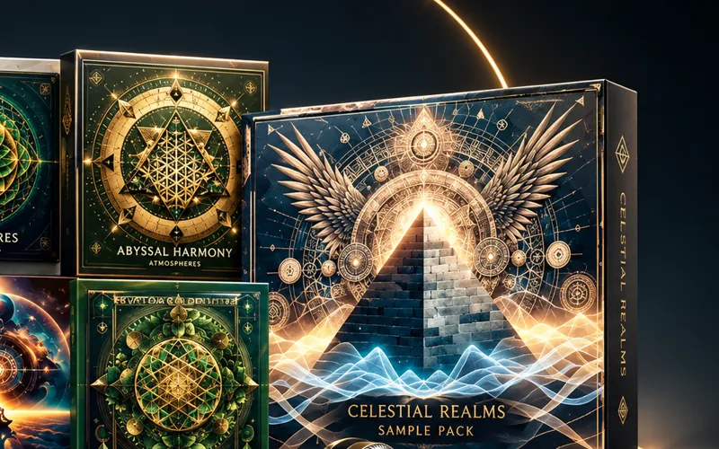
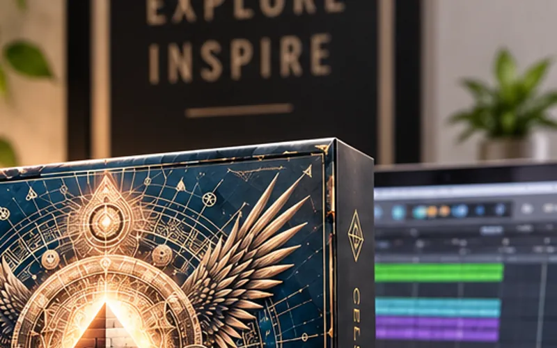
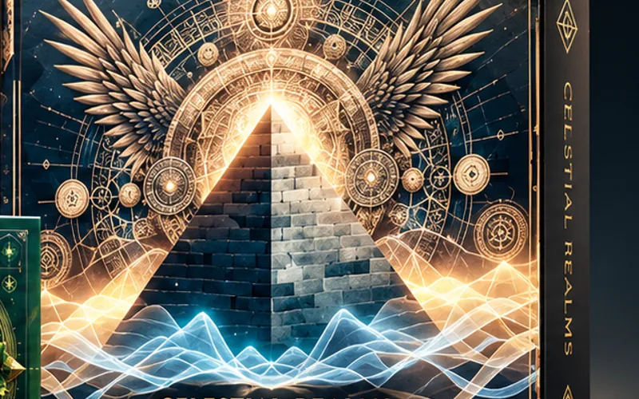

432 Hz & binaural audio
Each core track blends 432 Hz tuning, binaural beats or subliminal layers with rich ambient sound.
AstralHQ's digital audio collection pairs 432 Hz tuning with binaural beats and subliminal layers, so a few minutes of listening can become a daily ritual for relaxation, meditation and mindset work.





Shifting Vibrations is a downloadable audio program created by AstralHQ and narrated by Kai. Instead of capsules or devices, you get a curated set of tracks. Each one combines a sound technique (432 Hz tuning, binaural beats or subliminal messages) with immersive music.
The seller built the collection for people drawn to meditation, lucid dreaming, astral journeying and the law of attraction. It also suits anyone who simply wants a short, calming listening habit.
Each core track blends 432 Hz tuning, binaural beats or subliminal layers with rich ambient sound.
The seller's routine needs only about five minutes of daily listening, at home or on the move.
There's no box to wait for. The seller says access is emailed to you right after checkout.
The seller backs the purchase with a 60-day, satisfaction-based money-back guarantee.
Pick the track that matches the moment. The seller's routine asks for just one short session a day.
Play an abundance track while you set the tone for the day.
Use Shaman Beats or Golden Ratio Experience as a steady backdrop for a short sit.
Customers describe putting the music on before bed to help them relax.
Lucid Oddysee and New Horizons are designed for lucid-dream and visualization practice.

Slow down with sound-led relaxation and mindful breathing.
Explore →
Build a calming pre-bed listening ritual.
Explore →Lucid-dream, visualization and astral-journey practice.
Explore →
Intention-setting tracks for a positive, abundance-focused mindset.
Explore →Track names and descriptions follow the seller's listing. We rewrote the descriptions in our own words.

A 432 Hz track the seller built around golden-ratio tuning and positive-belief work for the subconscious.

Layered 432 Hz audio the seller describes as retraining limiting beliefs with positive-belief layers.
Drum-led soundscape with subliminal messages, positioned for lucid dreaming, astral projection and deep focus.
Subliminal track the seller dedicates to lucid dreaming and more vivid dreams.

Listed for grounding, relaxation and manifestation practice. The included guide suggests starting here.
An ambient journey track made for lucid dreaming and astral projection sessions.
Binaural beats meant to hold a theta-style listening state.
Ambient track with theta binaural beats for astral-projection practice.
Ambient meditation music with soft binaural beats.
A track the seller frames around “higher vibrations.”
These benefits reflect how the seller positions the tracks and what customers report. Individual experiences vary.
A short, guided-by-sound break you can return to every day.
Several customers say they use the tracks to relax before sleep.
Steady soundscapes help many listeners stay present during practice.
Dedicated tracks support lucid-dream incubation and visualization.
Abundance tracks pair well with affirmations and journaling.
Bed, couch, car (as a passenger), walk or kitchen: you only need a device.
After checkout, the seller emails your access. Save the tracks and the PDF instructions to your phone or computer.
Choose a comfortable spot. The guide suggests beginning with the Golden Ratio track, and headphones help on binaural tracks.
The seller suggests at least 14 days in a row. Note how you feel and which tracks you return to.
Never listen while driving or operating machinery.
Shifting Vibrations is a tool for relaxation and reflection. It works alongside good sleep, movement, nutrition and professional care, and doesn't replace any of them.
Listening at roughly the same time each day turns it into a habit you'll keep.
Sound practice complements, never replaces, exercise, sunlight and good nutrition.
A few lines after each session help you track mood, dreams and intentions.
Audio programs are not a substitute for medical, mental-health or financial advice.
“Awesome Kai. You really are authentic and way ahead of the material world.”
“Love the recordings, I really feel they are making a positive difference to my life.”
“Love the golden ratio soundtrack. It's super high vibrational.”
“In general I feel more grounded, safer and less stressed after I listen to the recordings.”
“The tracks are amazing, I'm still discovering it, beautiful for meditation and astral journeying…”
“I am using the Egyptian abundance frequency every morning and in the evening dream incubation waves…”
There are no bottle bundles or tiers. The seller sells a single digital package with every track, bonus and guide.

$300$47 one-time
Secure ClickBank checkout · free digital delivery
AstralHQ calls this a 100% money-back guarantee based on your complete satisfaction. You get 60 days to make the tracks part of your daily routine. If Shifting Vibrations doesn't suit you, request a refund through AstralHQ support or ClickBank within that window.
Because the purchase is processed by ClickBank, refunds go through an established retailer rather than a small website.





Shifting Vibrations is a digital audio collection made by AstralHQ and presented by Kai. It contains six core tracks built with 432 Hz tuning, binaural beats and subliminal messages, plus four bonus soundscapes and a PDF guide. Read the full product overview.
Six tracks: Egyptian Golden Ratio For Abundance 432 Hz, The Abundance Pyramid 432 Hz, Shaman Beats, Lucid Oddysee, Golden Ratio Experience and New Horizons Astral Experience. The bonuses are Stormy Escape, Astral Starwaves, Rainy Winter and Royal Awakening, and a PDF covers timing, preparation and troubleshooting.
No. It is an audio program, not a supplement, so there is nothing to swallow. Its building blocks are sound elements: 432 Hz tuning, binaural beats, subliminal messages and ambient soundscapes.
The seller recommends listening once a day for at least five minutes. You can listen in bed, on the couch or on a walk. The included guide suggests starting with the Golden Ratio track. Never listen while driving or operating machinery. See How It Works.
The seller's routine is at least five minutes a day. Many listeners play a track longer, for example as part of a bedtime wind-down or a meditation session.
Headphones are not required for most tracks, but binaural beats depend on each ear hearing a slightly different tone, so headphones give the intended effect on those tracks. Keep the volume at a comfortable, moderate level.
Explore government health resources and published research on the listening practices behind Shifting Vibrations: music, binaural beats, meditation, relaxation and sleep habits.
Reviews research on meditation and mindfulness for anxiety, sleep and pain, and notes that much of it is preliminary.
Related topic: Meditation practiceView Official Research ↗NIH Research SummaryNIH · NCCIHSummarises studies on music-based interventions. Results for anxiety, mood and pain look promising, but many studies are small.
Related topic: Music listeningView Official Research ↗US Government Health ResourceNIH · NCCIHCovers breathing, visualization and other methods that aim to trigger the body's relaxation response, and grades the evidence.
Related topic: Relaxation responseView Official Research ↗Peer-Reviewed ResearchNIH · National Library of Medicine (PubMed)A 2019 meta-analysis of 22 human studies (Psychological Research) found a medium overall effect, which varied with exposure time and frequency.
Related topic: Binaural beatsView Official Research ↗NIH Research SummaryNIH · News in HealthExplains present-moment awareness and reviews research on mindfulness for stress, sleep and blood pressure.
Related topic: Mindful listeningView Official Research ↗US Government Health ResourceNIH · NIMHExplains how stress differs from anxiety and lists coping habits like relaxation exercises and regular sleep.
Related topic: Everyday stressView Official Research ↗US Government Health ResourceNIH · MedlinePlusDescribes how long-term stress affects health, suggests relaxation and sleep for managing it, and says when to see a professional.
Related topic: Everyday stressView Official Research ↗US Government Health ResourceCDCCovers recommended sleep by age and habits that support sleep quality, and advises seeing a provider about ongoing sleep problems.
Related topic: Evening wind-downView Official Research ↗US Government Health ResourceNIH · NHLBIRecommends a regular schedule, a calming pre-bed routine and a quiet, dark bedroom.
Related topic: Evening wind-downView Official Research ↗US Government Health ResourceNIH · NIDCDExplains how loud or prolonged sound exposure damages hearing. Keep headphone volume comfortable.
Related topic: Headphone listeningView Official Research ↗These references are provided for educational purposes only. They do not represent an endorsement or approval of this product by any government agency. Research on individual components does not necessarily establish the effectiveness of the finished product.
Other digital programs and wellness products from our network that readers interested in sound and mindset often explore.
A 7-minute daily track that layers binaural beats, isochronic tones and ambient sound.
Explore ProductA 7-minute headphone track marketed for focus, creativity and mental clarity.
Explore ProductA roughly 10-minute headphone track, delivered as an MP3 download or stream.
Explore ProductAlso at: neuralravive.com
A five-minute daily personal-development audio with three bonus guides.
Explore ProductA personalised soulmate sketch and reading service by Tina Aldea.
Explore ProductAlso at: aldea-tina.com, tinaa-aldea.com
A liquid botanical brain-support formula in a 2 fl oz dropper bottle.
Explore ProductYou get 6 core tracks, 4 bonus soundscapes and a PDF guide as an instant digital download, all for a one-time $47. The seller backs it with a 60-day money-back guarantee.
Instant digital download · checkout through ClickBank · 60-day money-back guarantee from the seller
The complete audio collection: 6 core tracks, 4 bonus soundscapes and a PDF listening guide.
$300$47
One-time payment · instant download · 60-day money-back guarantee
View Offer →